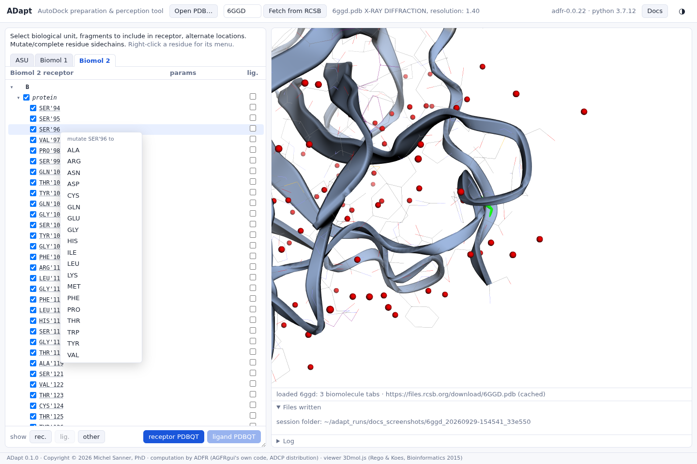
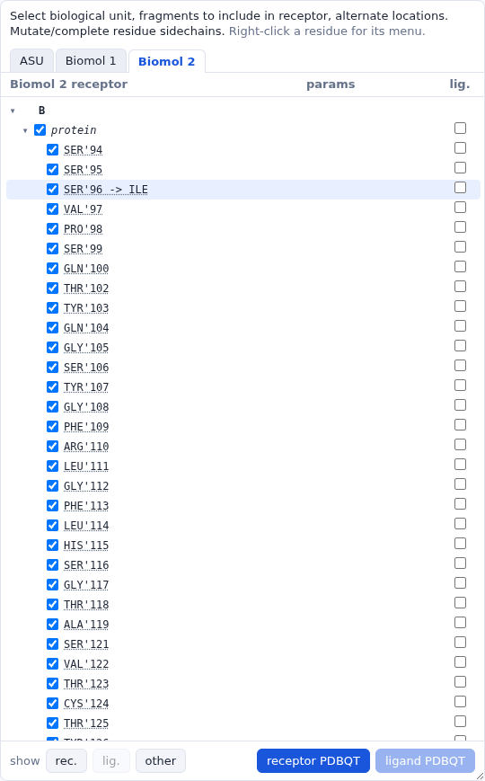

Mutating residues
Replace a residue by any standard amino acid, to dock against a variant or to remove a side chain that gets in the way.
Right-clicking a residue under protein (or under modified) opens a menu of the standard amino acids to mutate it to.


ILE">SER'96 -> ILE. The same menu
then offers Base Res: SER to undo the mutation.The mutation is made when the receptor is written: the new side chain is built on the
residue's backbone with the best-scoring rotamer, as for a side
chain to complete. It is recorded in the file (REMARK 850 AGFR mutation B:SER:96:_ ->
ILE) and applied to symmetry copies of the chain as well.
For a modified residue, the menu starts with its parent residue
(Base Res: …), which returns it to the standard amino acid.